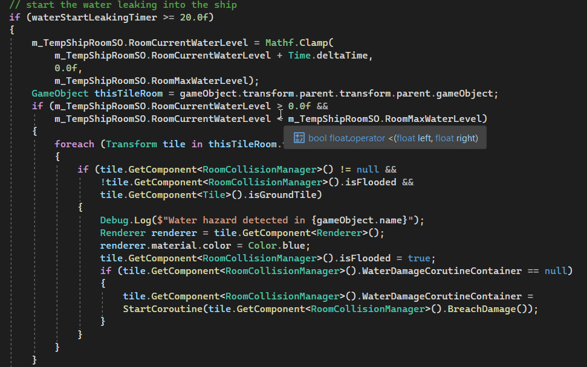
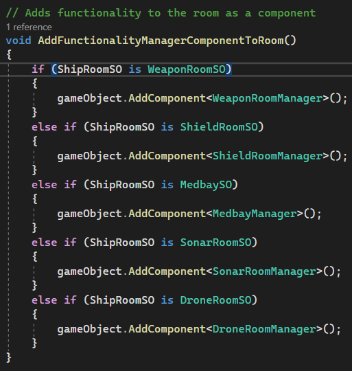
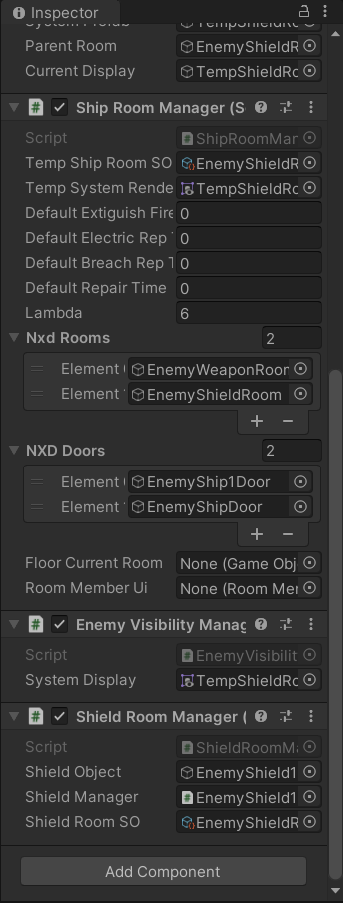

Pre-Beta 1 Sprint
Oct 17th, 2022 to Oct 30th, 2022 - New Hazard implementation and Bugs Fix

For the past two weeks, my primary tasks were to implement a new hazard system which is Flooding, and tackle major bugs as many as possible since this week (week of 10/24) was the stability check week. In general, this sprint went great as I have fixed various bugs related to the ship and system and the game finally is slowly getting close to what FTL looks like.
Programming and Bug fixing (17 hours)
For this sprint, I spent the majority of my work time on programming and bug fixing. The major programming tasks I was assigned to implement the flood hazard. Since I already worked refactoring the fire hazard last week, and the flood hazard functions similarly to the fire hazard, and the implementation was not difficult as I expected.
Flood Hazard
The way how the flood hazard work is that leak would originate from the location the player's ship was attacked by enemies. Then, when the leak stays about 20 seconds without being repaired, the leaked room will begin to fill the room with water and it will take about 10 seconds to fill the room. When the room is filled with water, it will then try to spread to neighboring rooms connected by doors. However, the water will only spread to a room that is connected by the opened door. Thus, the player should act carefully moving the crew as moving the crew to other rooms involves opening and closing doors.
Also, the flood hazard will cause the system to be downed and any crew members staying in the flooded room will take damage constantly unless they quickly leave that room.
Below is a code snippet of flood hazard which is similar to how flood hazard works:

1. This is the short gameplay of the flood hazard spreading when all doors in the ship are opened:
I am using the debug console menu to manually cause the leak in the room and let it spread out in the player ship. In the actual game, the flood hazard will be caused by the enemy's attack with a certain probability (Note: I have disabled the enemy ship because they kept firing their weapon and hindered me from recording a video. In the actual game, the enemy ship will be located at the top right corner).
2. And here is the short gameplay of the flood hazard spreading when all doors in the ship are closed:
As you can see, the flood does not spread to neighboring rooms if they are connected by closed doors. I also noticed that some frame drops are occurring whenever the flood hazard exists in either player or the enemy ship room. Therefore, I should keep this in my mind and work on optimizations during the stability check weeks.
Bugs Fixing
The next major task I did was to report any bugs and assign some of them to myself to fix. Because we spent much time on implementing a feature and not caring about the stability, there were more than 70 bugs reported when this week started. Thus, all the programmers focused on tackling these bugs as much as possible to put the game on a stable status.
I fixed around 6 - 7 bugs out of 70 bugs for this week. However, since it will take too much space to list all of them here, I will list one of them here as an example which is crucial but also was simple to fix it unexpectedly.
One of the bugs I fixed was that the enemy shield room had two ShieldRoomManager components when they were supposed to have only one ShieldRoomManager for each of them. This was not a huge problem if the enemy ship had a single shield but when they have two shields, shields would not recharge after the shields get taken down. This was because two ShieldRoomManagers in a single shield room were referencing two different shield objects and there was confusion about which shield room is responsible for which shield object. Thus, all I needed to was make sure the shield room in the enemy ship only has one ShieldRoomManager component. And the solution turned out to be simple.

This function, AddFunctionalityManagerComponentToRoom() which adds the corresponding room manager component based on the scriptable object this component was attached and was getting called twice when the object was enabled in the scene. Therefore, all I had to do was make sure that this function gets only called once when the enemyship is enabled on the scene.

Now, the enemy ship finally has one ShieldRoomManager component!
Playtesting (3 hours)
Because half of this sprint focused on bug fixing, I playtested our game for many hours using Unity editor and listed out possible bugs on Jira. Then assigned bugs that I wanted to work on.
Meetings (4 hours 30 minutes)
For 4.5 of my 24 hours of bi-weekly involvement, I spent my time in the studio meeting including
squad and department meetings in-person at BBB.
In the squad meeting, we playtested our game and took notes on bugs encountered and feedback on
current game mechanics and level designs.
Hours Breakdown
- PROGRAMMING AND REFACTORING: 17 HOURS
- PLAYTESTING: 3 HOURS
- MEETINGS: 4 HOURS 30 MINUTES
- TOTAL HOURS FOR PRE-BETA SPRINT 1: 24 HOURS 30 MINUTES